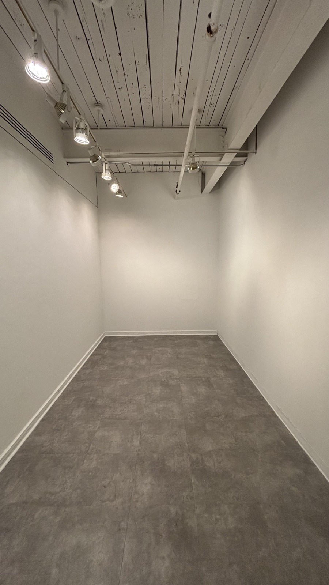
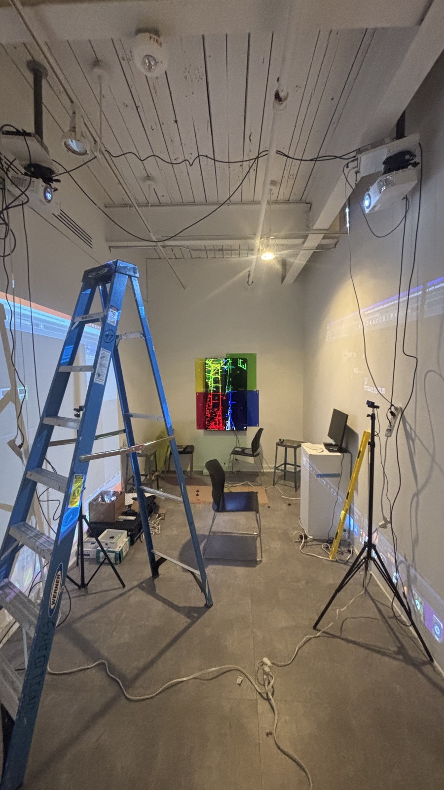
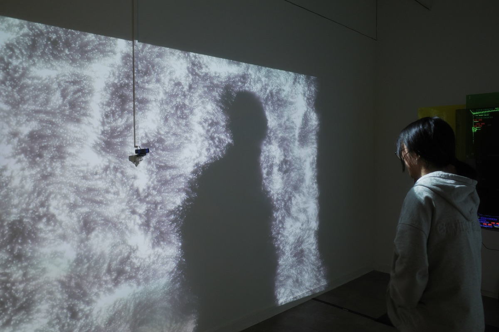

LEFT WALL
Loading left wall projection…
1 17ft by 15 ft room. 2 projectors. 3 cameras. 1 55 inch TV. 2 speakers. 4 mid air hanging acrylic sheets. 3 days to install & me.
Made by Siddharth. ©itsiddharth 2026
Once I saw the gallery, I started planning how the experience would unfold. I wanted a central focal point at the far end of the room with body-tracking projections on both side walls. Visitors would be surrounded by responsive imagery as they moved toward the centerpiece.
I talked with my advisors about what equipment was available on campus, calculated projection sizes based on throw distances, and figured out camera placements. The technical setup started to take shape: cameras at eye level, projectors mounted to the ceiling on opposite walls.



A camera tracked visitors entering the space. Their silhouettes appeared on the wall, rendered as clouds of glowing white particles that followed their every move.
I used p5.js to experiment with different face filters, and an RGB visual style started to emerge that I was drawn to. But I was struggling to find something that would tie the physical and digital elements together.
After experimenting with a gazillion text options and sentences, I found “You are your choices” to be the most true to what I wanted my piece to say. For me this sentence embodied everything I wanted to communicate to the viewer. I feel that this is the crux of human identity and in the end we are not bound by anything except what we want ourselves to be. Our choices shape what we are and its only in retrospect that we can see how they've defined us.
Turning all of this into a physical installation meant figuring out things I had never done before. Mounting projectors to ceilings, hanging acrylic in mid-air, getting cameras and code to work together in real time. I had a tight window to get everything installed, so I broke it down into phases.